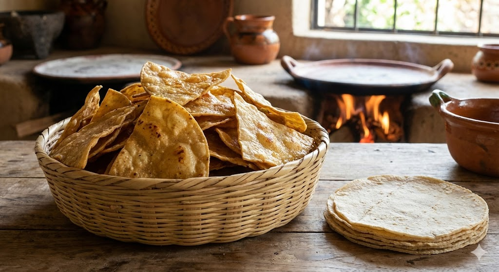

Tortillas: Die Sonne auf dem Teller
Für Millionen Menschen in Mexiko und Mittelamerika ist die Tortilla nicht nur eine Beilage, sondern Besteck, Teller und Nahrung in einem. Ihre Geschichte beginnt tausende Jahre vor Ankunft der Europäer.

1. Nixtamalisation: Die chemische Revolution
Warum kann man aus Maismehl (Polenta) keine Tortillas formen? Es zerbröselt einfach. Die indigenen Völker entdeckten eine geniale Lösung, die Chemie und Kochen verbindet.
Kochen mit Steinen (Kalk)
Die Nixtamalisation ist das Kochen von getrockneten Maiskörnern in alkalischem Wasser (versetzt mit Holzasche oder Löschkalk/Calciumhydroxid).
- Mechanik: Die harte Schale des Maiskorns löst sich, und die Stärke verändert sich ("verkleistert"). Dadurch entsteht ein Teig (Masa), der klebt und formbar ist – ganz ohne Gluten!
- Gesundheit: Roher Mais bindet Vitamin B3 (Niacin). Der Körper kann es nicht aufnehmen. Der Kalk "befreit" das Vitamin. Ohne diesen Prozess bekamen Menschen, die nur Mais aßen, die Mangelkrankheit Pellagra.
Das Ergebnis ist Masa (der Teig) oder getrocknet Masa Harina (das Mehl). Es schmeckt ganz anders als Polenta: erdig, nussig und aromatisch.
2. Der Glaubenskrieg: Mais vs. Weizen
In Mexiko gibt es eine unsichtbare Grenze. Im Süden regiert der Mais, im Norden der Weizen.
Tortilla de Maíz (Das Original)
Klein (ca. 10-15cm), gelblich oder weiß, glutenfrei. Sie schmecken intensiv nach Mais.
Verwendung: Tacos, Enchiladas, Tostadas.
Haltbarkeit: Muss frisch gegessen werden, wird schnell hart.
Tortilla de Trigo (Der Import)
Die Spanier brachten Weizen mit. Im trockenen Norden Mexikos (Sonora) gedieh er besser als Mais. Weizentortillas enthalten Gluten und oft Schmalz.
Verwendung: Burritos, Quesadillas (Gringas), Fajitas.
Eigenschaft: Größer, dehnbarer, milder im Geschmack.
3. Die Taco-Architektur
Eine Tortilla ist nur die Leinwand. Was man daraus faltet, rollt, füllt oder bäckt, bestimmt den Namen des Gerichts. Die Vielfalt ist endlos.
4. Zero Waste: Totopos (Tortilla Chips)
Was wir als "Nachos" oder Chips aus der Tüte kennen, ist eigentlich Resteverwertung.
Eine Mais-Tortilla schmeckt nur frisch vom heißen Blech (Comal). Sobald sie kalt ist, wird sie "ledrig". Alte Tortillas werden daher in Dreiecke geschnitten und frittiert. So werden sie zu knusprigen Totopos.
💡 Chilaquiles: Das ultimative mexikanische Frühstück (und Katermittel). Totopos werden in grüner oder roter Salsa gekocht, bis sie die Soße aufsaugen und wieder leicht weich werden. Serviert mit Ei, Käse, Zwiebeln und Creme.